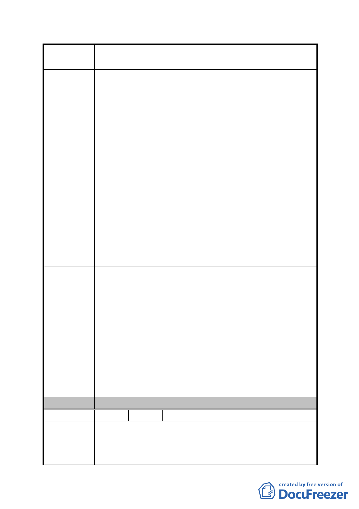

案
名
修訂臺北市「基隆河（中山橋至成美橋段）附近地區土地使
用分區與都市設計管制要點」（北段地區）計畫案
2、地主於區段徵收領回土地時即因商業用地同時擁有高
強度使用及容積獎勵雙重誘因，始願以遠低於住宅用
土地之分配比例領回商用土地（86年大灣北段土地區
段徵收分配比例一覽表詳附圖）；高強度商業用途已
因前述不符市場需求，如再強加該修訂內容所載獎勵
限制，對地主豈非雙重懲罰？
3、一般地區商業用地如做低強度之住宅使用仍得適用綜
合設計放寬獎勵，且無本修訂案商業用途1/2以上之限
制。
4、修訂案已有「至少一、二樓需作為原計畫商業使用」、
「開發作住宅使用時，須於建築基地內提供具有公
園、綠地或廣場性質之公共設施」等規範，顯見修訂
內容已維持商業區及娛樂區主要軸帶商業活動內涵，
並要求適度提供因住宅使用衍生之必要公共設施，已
兼顧都市發展、市場開發效益及社會公平。因此實無
是項限制之必要，應回歸「台北市分區使用管制規則」
中綜合設計放寬獎勵及比照第三種商業區規定之精
神。
取消下列有關綜合設計放寬規定獎勵之規定，回歸「台
北市分區使用管制規則」中綜合設計放寬獎勵及比照第
三種商業區規定之精神：
(3)本計畫區商業區、娛樂區之建築基地，作附表1 指定使
用項目之容積樓地板面積應達申請基地總容積樓地板面
建議辦法
積之二分之一以上者，始得就該指定使用項目之容積樓
地板面積適用本項綜合設計放寬規定之獎勵。
2、放寬規定：建築物允許增加之總樓地板面積，以其所留
設之公共開放空間「有效面積」乘以「(附表 1 指定使用
項目之容積樓地板面積)/(申請基地總容積樓地板面積)
×100%」乘以二分之一計算之。且不得超過法定容積之
20%，並須作為指定使用項目。
委 員 會 決 議 同編號 1。
編 號 7 陳情人 美福企業股份有限公司（C1 金泰段 98 號）
一、83年區段徵收時，金泰段為商業區、娛樂區及住宅區與
陳情理由
內湖六期輕工業區在分取時以3:1比例計算土地成本，
而內湖六期輕工業區土地成本低，卻放寬為如同商業區
來開發，土地由低強度轉為高強度卻不須繳代金。然而
- 59 -